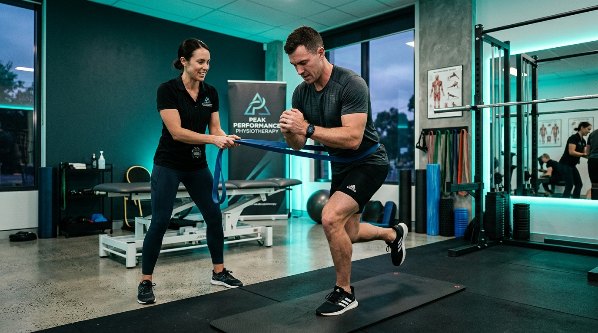
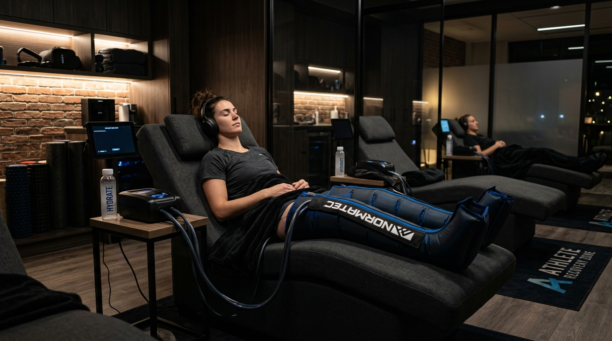
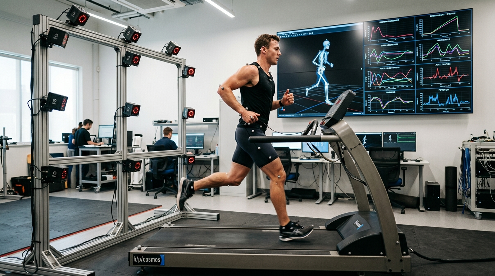

3D Kinetic Sensor Telemetry & Robotic Recovery
Engineered for high-performance athletes. We combine 1,200 FPS optical gait sensors, automated spine decompression, and sub-zero cryo-shock suites to restore joint torque 2.5x faster.
4 Biomechanical Diagnostics & Robotic Recovery Systems
3D Optical Kinetic Motion Telemetry
Multi-angle optical sensors capturing 1,200 FPS angular velocity to map ground force vectors.

Automated Vertebral & Joint Robotics
Decompression tables relieving nerve root pressure and restoring disc spatial orientation.
Class IV High-Intensity Cryo-Laser
Photo-biomodulation laser coupled with nitrogen cold vapor to accelerate cellular ATP repair.

Anti-Gravity Hydro Flume Suite
Buoyancy water treadmills allowing high-velocity sprinting with 80% reduced weight impact.
How Kinetic Telemetry Transforms Rehabilitation Precision
From 1,200 FPS optical capture to automated robotic joint alignment — trace our high-speed recovery data pipeline.
1,200 FPS Optical Gait & Motion Capture
LATENCY < 2msHigh-speed infrared cameras record 3D joint angles, stride symmetry, and landing force vectors in sub-millimeter spatial resolution.
AI Kinetic Vector & Force Modeling
NEURAL ENGINENeural processing engine computes bilateral ground reaction force (GRF) imbalances and pinpoints hidden mechanical compensations.
Targeted Robotic Spine & Joint Decompression
PRECISION ±0.1mmRobotic tension tables apply millimeter-calibrated decompression forces tailored to patient telemetry to relieve nerve shear.
Class IV Cryo-Laser Tissue Regeneration
3.8x ATP REPAIRDual-wave photon laser combined with sub-zero cryo-shock vapor accelerates mitochondrial ATP synthesis and clears micro-edema.

Biomechanical Telemetry Case Analytics
Real biometric telemetry data tracked across professional athletes returning from major musculoskeletal injuries.

Marcus Vance
Grade 2 Hamstring Strain & Pelvic Tilt
Elena Rostova
Chronic Achilles Tendinopathy

David Chen
Rotator Cuff & Lumbar Compression